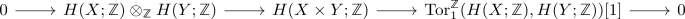

product of homologically finite spaces as homologically finite space
Proposition
Let $X,Y$ be homologically finite topological spaces Then their product $X \times Y$ is also homologically finite with
Proof
follows from the kunneth formula for singular homology

zero object for almost all $n$
for sufficiently large $n$ (for example $\mathrm{max}(Y) + \mathrm{max}(Y) + 1$)
\begin{align*}
H_n(X), H_n(Y) =& 0 \\
\mathrm{Tor}_1^{\mathbb{Z}}(H_{n-1}(X), H_{n-1}(Y)) =& \mathrm{Tor}_1^{\mathbb{Z}}(0,0) \\
=& 0
\end{align*}
finitely generated
follows as